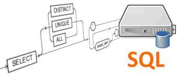
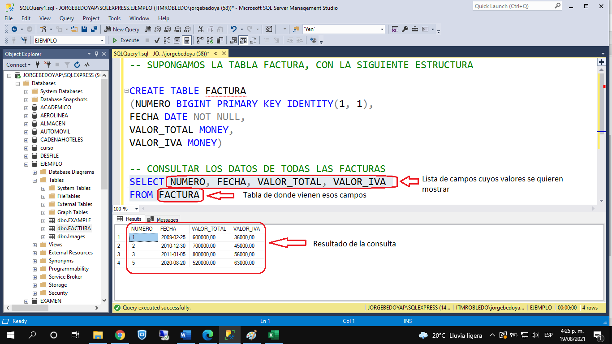
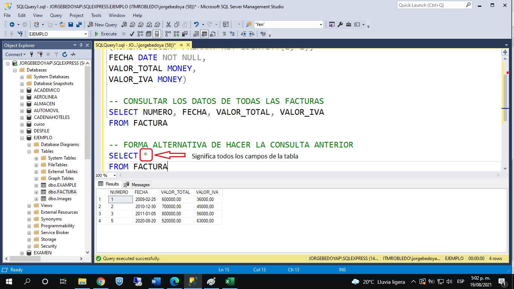
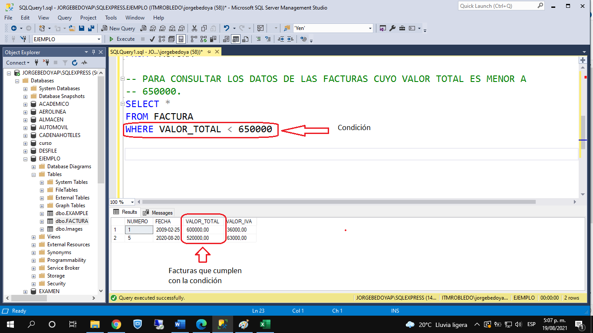

DESARROLLO DE BASES DE DATOS
CONSULTAS BÁSICAS
Lista desordenada
Cual es el orden de la sintaxis de la instrucción de consulta en SQL?
- SELECT
- FROM
- WHERE
- GROUP BY
- HAVING
- ORDER BY
Actividad desplegable
|
Para hacer consultas en bases de datos relacionales, a través del lenguaje SQL, se utiliza la instrucción SELECT. La sintaxis general y completa de una instrucción SELECT es la siguiente: SELECT <lista de campos cuyos valores se desean mostrar> FROM <nombre de tabla(s) de donde vienen esos campos> [WHERE <condicion(es) que deben cumplir las tuplas>] [GROUP BY <lista de campos de agrupamiento>] [HAVING <condicion(es) a cumplir por los grupos de datos>] [ORDER BY <lista de campos de ordenamiento>] |
 Fuente. https://linube.com/blog/consultas-sql-consumo-cpu/ |
|  |
Supongamos la tabla FACTURA, cuya estructura aparece en la imagen. Si necesitamos consultar los valores de todos los campos de la tabla, de todas las facturas grabadas, usamos el SELECT junto con la lista de todos los campos de la tabla, separados por coma (,). Se puede mirar en el resultado que se traen los datos de todos los campos de todas las facturas. Si no necesitamos traer todos los campos, sino solo algunos, en la lista de campos del SELECT ponemos los campos que se deseen mostrar. |
|  |
Una forma alternativa de hacer la consulta anterior es a través del uso del asterisco (*) en la cláusula SELECT. Este asterisco (*) significa "todos los campos de la tabla". |
|  |
Con la cláusula WHERE podremos filtrar las tuplas que se van a mostrar en el resultado. En la imagen, se están consultando los datos de las facturas cuyo valor total es menor a 650000. Como se puede observar en la imagen, en el resultado aparecen solo las facturas que cumplan con la condición escrita en la cláusula WHERE. |
Video:
Obra publicada con Licencia Creative Commons Reconocimiento Compartir igual 4.0